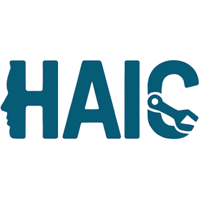

<!doctype html>
<html lang="en">
  <head>
    <meta charset="utf-8" />
    <meta http-equiv="X-UA-Compatible" content="IE=edge" />
    <meta
      name="viewport"
      content="width=device-width, initial-scale=1, minimum-scale=1.0, shrink-to-fit=no, viewport-fit=cover"
    />
    <meta name="google-site-verification" content="aUADKX91tAz8J1kAwzjd_GgRmIquQzyPgDdDuNTOBhc" />
    <title>The 2nd MICCAI Workshop on Human-AI Collaboration</title>
    <meta name="title" content="The 2nd MICCAI Workshop on Human-AI Collaboration" />
    <meta
      name="description"
      content="Homepage for the MICCAI 2026 Workshop on Human-AI Collaboration."
    />
    <link
      rel="icon"
      type="image/png"
      href="images/square_workshop_icon.png"
    />
    <link
      rel="stylesheet"
      href="https://cdn.jsdelivr.net/npm/docsify-themeable@0/dist/css/theme-simple.css"
    />
    <style>
      :root {
        --content-max-width: 980px;
      }

      .markdown-section img {
        height: auto;
        max-width: 100%;
      }

      .markdown-section table {
        display: block;
        overflow-x: auto;
        white-space: nowrap;
      }

      .site-footer {
        display: flex;
        justify-content: flex-end;
        align-items: center;
        flex-wrap: wrap;
        padding: 20px;
        background: #f9f9f9;
        border-top: 1px solid #eee;
        font-size: 14px;
        gap: 24px;
        position: relative;
        z-index: 1;
      }

      .site-footer-logo img {
        height: 96px;
        width: auto;
      }

      .site-footer-copy {
        font-size: 12px;
        text-align: center;
      }

      @media (max-width: 768px) {
        .markdown-section {
          padding-left: 20px;
          padding-right: 20px;
        }

        .markdown-section h1 {
          font-size: 2rem;
        }

        .markdown-section h2 {
          font-size: 1.5rem;
        }

        .site-footer {
          justify-content: center;
          padding: 16px;
          gap: 16px;
        }

        .site-footer-logo img {
          height: 72px;
        }
      }
    </style>
    <!-- add an og card for the ease of sharing like other sites do-->
     <!-- style -->
  </head>
  <body>
    <div id="app"></div>
<!-- Custom footer -->
<div class="site-footer">
  <!-- Left: Social media; let's use ssk instead; add them when ready
  <div style="display: flex; align-items: center; gap: 15px;">
    <a href="https://bsky.app/" target="_blank" title="Bluesky">
      
    </a>
    <a href="https://twitter.com/" target="_blank" title="Twitter">
      
    </a>
    <a href="https://linkedin.com/" target="_blank" title="LinkedIn">
      
    </a>
  </div>
-->

  <!-- Right: MICCAI logo -->
  <div class="site-footer-logo">
    <a href="https://conferences.miccai.org/" target="_blank" rel="noopener" title="MICCAI Conference">
      
    </a>
  </div>

  <!-- Copyright -->
</div>
  <div class="site-footer-copy">© 2026 MICCAI HAIC Workshop. All rights reserved.</div>
<footer style="text-align: center; padding: 1em 0; font-size: 0.9em; color: #888;">
  Powered by <a href="https://docsify.js.org" target="_blank" rel="noopener">Docsify</a>,
  <a href="https://jhildenbiddle.github.io/docsify-themeable" target="_blank" rel="noopener">docsify-themeable</a>,
  and inspired by <a href="https://github.com/zacbaum" target="_blank" rel="noopener">@zacbaum</a>. <br>The Microsoft CMT service was used for managing the peer-reviewing process for this conference. This service was provided for free by Microsoft and they bore all expenses, including costs for Azure cloud services as well as for software development and support.
</footer>
<!-- End footer -->
    <script>
      window.$docsify = {
        name: "MICCAI Workshop on Human-AI Collaboration",
        coverpage: true,
        loadSidebar: true,
        relativePath: true,
        subMaxLevel: 3,
      };
    </script>
    <script src="https://cdn.jsdelivr.net/npm/docsify@4/lib/docsify.min.js"></script>
    <script src="https://cdn.jsdelivr.net/npm/docsify-themeable@0/dist/js/docsify-themeable.min.js"></script>
  </body>
</html>
